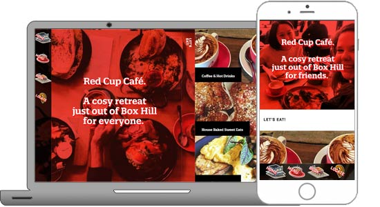

<!DOCTYPE html><html><head><title>Portfolio of Nathan Keen</title><meta charset="utf-8"><meta name="viewport" content="width=device-width, initial-scale=1, shrink-to-fit=no"><link rel="stylesheet" href="https://maxcdn.bootstrapcdn.com/bootstrap/4.0.0-beta.2/css/bootstrap.min.css" integrity="sha384-PsH8R72JQ3SOdhVi3uxftmaW6Vc51MKb0q5P2rRUpPvrszuE4W1povHYgTpBfshb" crossorigin="anonymous"><link rel="stylesheet" href="css/fontawesome.css"><link rel="stylesheet" href="css/layout.css"></head></html><body id="top" data-spy="scroll" data-target="#navbot" data-offset="0"> <div class="container"><header><h1 class="text-center">Hi! I'm Nathan Keen;<br /> a UX/UI designer</h1><p class="text-center">This is my portfolio</p></header><section><h2 class="anchor" id="UI">User Interface (UI)</h2><p class="text-muted">What design will be intuitive for the user?</p><div class="row"><div class="col-md-6"><div class="card"><div class="card-header">The Naturally Wild home page</div><figure><div class="card-body"><figcaption><p class="card-text">Built on Shopify, this is set to pay for itself in 6 months, delivering 150x the previous website!</p></figcaption></div></figure><a class="btn btn-primary" href="/portfolio-NatWild2017.html">Read more</a></div></div><div class="col-md-6"><div class="card"><div class="card-header">Red Cup Cafe</div><figure><div class="card-body"><figcaption><p class="card-text">Built using Joomla, the owner wanted a unique and authentic look</p></figcaption></div></figure><a class="btn btn-primary" href="/portfolio-RedCupCafe2017.html">Read more</a></div></div></div></section><section><div class="row"><div class="col-12"><h3 class="text-center">UI skills</h3><table class="table table-responsive" id="stars"><tbody><tr><td class="align-middle" colspan="4"><span class="badge badge-primary"><em>Languages</em></span></td></tr><tr><td class="align-middle">CSS3 &amp; earlier</td><td class="align-middle"><span><i class="fas fa-star"></i><i class="fas fa-star"></i><i class="fas fa-star"></i><i class="fas fa-star"></i><i class="fas fa-star"></i></span></td><td class="align-middle"><span class="badge badge-secondary">I could teach it</span></td><td class="align-middle"><a href="/portfolio-RedCupCafe2017.html#Proto">Red Cup Cafe 2017</a></td></tr><tr><td class="align-middle">SASS/SCSS</td><td class="align-middle"><span><i class="fas fa-star"></i><i class="fas fa-star"></i><i class="fas fa-star"></i></span></td><td class="align-middle"><span class="badge badge-secondary">I understand most of it</span></td><td class="align-middle"><a href="https://github.com/nathankeenmelb/nk-portfolio">This portfolio website (via Github)</a></td></tr><tr><td class="align-middle">HTML5 &amp; earlier</td><td class="align-middle"><span><i class="fas fa-star"></i><i class="fas fa-star"></i><i class="fas fa-star"></i><i class="fas fa-star"></i><i class="fas fa-star"></i></span></td><td class="align-middle"><span class="badge badge-secondary">I could teach it</span></td><td class="align-middle"><a href="https://github.com/nathankeenmelb/nk-portfolio">This portfolio website (via Github)</a></td></tr><tr><td class="align-middle">Pug/Jade</td><td class="align-middle"><span><i class="fas fa-star"></i><i class="fas fa-star"></i><i class="fas fa-star"></i></span></td><td class="align-middle"><span class="badge badge-secondary">I understand most of it</span></td><td class="align-middle"><a href="https://github.com/nathankeenmelb/nk-portfolio">This portfolio website (via Github)</a></td></tr><tr><td class="align-middle">JavaScript (native)</td><td class="align-middle"><span><i class="fas fa-star"></i><i class="fas fa-star"></i></span></td><td class="align-middle"><span class="badge badge-secondary">I know the basics</span></td><td class="align-middle"><a href="https://codepen.io/nathankeenmelb/pen/GOQwxb">Custom typewriter (via Codepen)</a></td></tr><tr><td class="align-middle">jQuery</td><td class="align-middle"><span><i class="fas fa-star"></i><i class="fas fa-star"></i><i class="fas fa-star"></i></span></td><td class="align-middle"><span class="badge badge-secondary">I understand most of it</span></td><td class="align-middle"><a href="#"></a></td></tr><tr><td class="align-middle">React</td><td class="align-middle"><span><i class="fas fa-star"></i></span></td><td class="align-middle"><span class="badge badge-secondary">I'm learning it</span></td><td class="align-middle"><a href="https://reactforbeginners.com/">via Wes Bos</a></td></tr><tr><td class="align-middle" colspan="4"><span class="badge badge-primary"><em>Design</em></span></td></tr><tr><td class="align-middle">Adobe Photoshop</td><td class="align-middle"><span><i class="fas fa-star"></i><i class="fas fa-star"></i><i class="fas fa-star"></i><i class="fas fa-star"></i><i class="fas fa-star"></i></span></td><td class="align-middle"><span class="badge badge-secondary">I've used it for zonks</span></td><td class="align-middle"><a href="https://www.behance.net/gallery/40807817/Redcup-Cafe-bespoke-web-design-build">Red Cup Cafe 2008 (via Behance)</a></td></tr><tr><td class="align-middle">Adobe Illustrator</td><td class="align-middle"><span><i class="fas fa-star"></i><i class="fas fa-star"></i><i class="fas fa-star"></i><i class="fas fa-star"></i></span></td><td class="align-middle"><span class="badge badge-secondary">I've used it for zonks</span></td><td class="align-middle"><a href="https://www.behance.net/gallery/41117335/Infographic-Conflict-Resolution">Infographic on Conflict Resolution (via Behance)</a></td></tr><tr><td class="align-middle">Adobe InDesign</td><td class="align-middle"><span><i class="fas fa-star"></i><i class="fas fa-star"></i><i class="fas fa-star"></i></span></td><td class="align-middle"><span class="badge badge-secondary">I know most of it</span></td><td class="align-middle"><a></a></td></tr><tr><td class="align-middle">Web &amp; Print</td><td class="align-middle"><span><i class="fas fa-star"></i><i class="fas fa-star"></i><i class="fas fa-star"></i><i class="fas fa-star"></i></span></td><td class="align-middle"><span class="badge badge-secondary">I could teach it</span></td><td class="align-middle"><a href="https://www.behance.net/nathankeenmelbourne">Graphic Design portfolio (via Behance)</a></td></tr><tr><td class="align-middle" colspan="4"><span class="badge badge-primary"><em>Frameworks</em></span></td></tr><tr><td class="align-middle">Bootstrap</td><td class="align-middle"><span><i class="fas fa-star"></i><i class="fas fa-star"></i><i class="fas fa-star"></i><i class="fas fa-star"></i></span></td><td class="align-middle"><span class="badge badge-secondary">I create from scratch</span></td><td class="align-middle"><a href="https://github.com/nathankeenmelb/nk-portfolio">This portfolio website (via Github)</a></td></tr><tr><td class="align-middle">Joomla</td><td class="align-middle"><span><i class="fas fa-star"></i><i class="fas fa-star"></i><i class="fas fa-star"></i><i class="fas fa-star"></i><i class="fas fa-star"></i></span></td><td class="align-middle"><span class="badge badge-secondary">I could teach it</span></td><td class="align-middle"><a href="/portfolio-RedCupCafe2017.html">Red Cup Cafe 2017</a></td></tr><tr><td class="align-middle">WordPress</td><td class="align-middle"><span><i class="fas fa-star"></i><i class="fas fa-star"></i><i class="fas fa-star"></i></span></td><td class="align-middle"><span class="badge badge-secondary">I understand most of it</span></td><td class="align-middle"><a href="#"></a></td></tr></tbody></table></div></div></section><section><h2 class="anchor" id="UX">User Experience (UX)</h2><p class="text-muted">What works for the user to make their experience the best?</p><div class="row"></div></section><section><div class="row"><div class="col-12"><h3 class="text-center">UX skills</h3><table class="table table-responsive" id="stars"><tbody><tr><td class="align-middle" colspan="4"><span class="badge badge-primary"><em>Initiation</em></span></td></tr><tr><td class="align-middle">Business Goals</td><td class="align-middle"><span><i class="fas fa-star"></i><i class="fas fa-star"></i><i class="fas fa-star"></i></span></td><td class="align-middle"><span class="badge badge-secondary">I confidently extract goals</span></td><td class="align-middle"><a href="/portfolio-RedCupCafe2017.html#Neg">Red Cup Cafe 2017</a></td></tr><tr><td class="align-middle">Competitor Analysis</td><td class="align-middle"><span><i class="fas fa-star"></i><i class="fas fa-star"></i><i class="fas fa-star"></i><i class="fas fa-star"></i></span></td><td class="align-middle"><span class="badge badge-secondary">I chart/graph in my sleep</span></td><td class="align-middle"><a></a></td></tr><tr><td class="align-middle" colspan="4"><span class="badge badge-primary"><em>Planning, excluding PM</em></span></td></tr><tr><td class="align-middle">User Personas/Profiling</td><td class="align-middle"><span><i class="fas fa-star"></i><i class="fas fa-star"></i><i class="fas fa-star"></i></span></td><td class="align-middle"><span class="badge badge-secondary">I understand most of it</span></td><td class="align-middle"><a href="/portfolio-RedCupCafe2017.html#UX">Red Cup Cafe 2017</a></td></tr><tr><td class="align-middle">User Stories/Journey</td><td class="align-middle"><span><i class="fas fa-star"></i><i class="fas fa-star"></i><i class="fas fa-star"></i></span></td><td class="align-middle"><span class="badge badge-secondary">I understand most of it</span></td><td class="align-middle"><a href="/portfolio-RedCupCafe2017.html#UX">Red Cup Cafe 2017</a></td></tr><tr><td class="align-middle">Emotional Design</td><td class="align-middle"><span><i class="fas fa-star"></i><i class="fas fa-star"></i></span></td><td class="align-middle"><span class="badge badge-secondary">I've read the theory</span></td><td class="align-middle"><a></a></td></tr><tr><td class="align-middle">Inclusive Design &amp; WCAG</td><td class="align-middle"><span><i class="fas fa-star"></i><i class="fas fa-star"></i></span></td><td class="align-middle"><span class="badge badge-secondary">I understand some of it</span></td><td class="align-middle"><a href="#"></a></td></tr><tr><td class="align-middle">Specifications</td><td class="align-middle"><span><i class="fas fa-star"></i><i class="fas fa-star"></i><i class="fas fa-star"></i><i class="fas fa-star"></i></span></td><td class="align-middle"><span class="badge badge-secondary">I know pros &amp; cons of many ways</span></td><td class="align-middle"><a></a></td></tr><tr><td class="align-middle" colspan="4"><span class="badge badge-primary"><em>Prototyping, excluding UI</em></span></td></tr><tr><td class="align-middle">Information Architecture</td><td class="align-middle"><span><i class="fas fa-star"></i><i class="fas fa-star"></i><i class="fas fa-star"></i><i class="fas fa-star"></i><i class="fas fa-star"></i></span></td><td class="align-middle"><span class="badge badge-secondary">I see dead patterns (6th sense)</span></td><td class="align-middle"><a></a></td></tr><tr><td class="align-middle">Prototyping, lo-fi</td><td class="align-middle"><span><i class="fas fa-star"></i><i class="fas fa-star"></i><i class="fas fa-star"></i></span></td><td class="align-middle"><span class="badge badge-secondary">I confidently create</span></td><td class="align-middle"><a></a></td></tr><tr><td class="align-middle">Prototyping, hi-fi (interactive)</td><td class="align-middle"><span><i class="fas fa-star"></i><i class="fas fa-star"></i><i class="fas fa-star"></i></span></td><td class="align-middle"><span class="badge badge-secondary">I confidently create</span></td><td class="align-middle"><a href="/portfolio-RedCupCafe2017.html#Proto">Red Cup Cafe 2017</a></td></tr><tr><td class="align-middle">Qualitative Research</td><td class="align-middle"><span><i class="fas fa-star"></i><i class="fas fa-star"></i><i class="fas fa-star"></i></span></td><td class="align-middle"><span class="badge badge-secondary">I understand most of it</span></td><td class="align-middle"><a href="/portfolio-RedCupCafe2017.html#Proto">Red Cup Cafe 2017</a></td></tr><tr><td class="align-middle">Quantitative Research</td><td class="align-middle"><span><i class="fas fa-star"></i><i class="fas fa-star"></i><i class="fas fa-star"></i></span></td><td class="align-middle"><span class="badge badge-secondary">I confidently create + analyse</span></td><td class="align-middle"><a></a></td></tr><tr><td class="align-middle" colspan="4"><span class="badge badge-primary"><em>Quality Controls</em></span></td></tr><tr><td class="align-middle">Standards/Guidelines</td><td class="align-middle"><span><i class="fas fa-star"></i><i class="fas fa-star"></i><i class="fas fa-star"></i></span></td><td class="align-middle"><span class="badge badge-secondary">I confidently create them</span></td><td class="align-middle"><a href="#"></a></td></tr><tr><td class="align-middle" colspan="4"><span class="badge badge-primary"><em>Software</em></span></td></tr><tr><td class="align-middle">Adobe XD</td><td class="align-middle"><span><i class="fas fa-star"></i><i class="fas fa-star"></i><i class="fas fa-star"></i></span></td><td class="align-middle"><span class="badge badge-secondary">I confidently use it</span></td><td class="align-middle"><a href="#"></a></td></tr><tr><td class="align-middle">Axure</td><td class="align-middle"><span><i class="fas fa-star"></i><i class="fas fa-star"></i><i class="fas fa-star"></i></span></td><td class="align-middle"><span class="badge badge-secondary">I confidently use it</span></td><td class="align-middle"><a href="#"></a></td></tr><tr><td class="align-middle">Sketch + Invision</td><td class="align-middle"><span><i class="fas fa-star"></i><i class="fas fa-star"></i></span></td><td class="align-middle"><span class="badge badge-secondary">I understand the basics</span></td><td class="align-middle"><a href="#"></a></td></tr><tr><td class="align-middle">Balsamiq</td><td class="align-middle"><span><i class="fas fa-star"></i><i class="fas fa-star"></i></span></td><td class="align-middle"><span class="badge badge-secondary">I understand the basics</span></td><td class="align-middle"><a href="#"></a></td></tr><tr><td class="align-middle">Proto.io</td><td class="align-middle"><span><i class="fas fa-star"></i><i class="fas fa-star"></i><i class="fas fa-star"></i></span></td><td class="align-middle"><span class="badge badge-secondary">I confidently use it</span></td><td class="align-middle"><a href="#"></a></td></tr></tbody></table></div></div></section><section><h2 class="anchor" id="PM">Project Management</h2><p class="text-muted">How can we manage timeframes?</p><div class="row"><div class="col-md-6"><div class="card"><div class="card-header">Outsourcing</div><figure><div class="card-body"><figcaption><p class="card-text">How I delivered twice the value for Red Cup Cafe in the agreed time through smart outsourcing.</p></figcaption></div></figure><a class="btn btn-primary" href="/portfolio-RedCupCafe2017.html#Proto">Read more</a></div></div></div></section><section><div class="row"><div class="col-12"><h3 class="text-center">PM skills</h3><table class="table table-responsive" id="stars"><tbody><tr><td class="align-middle">PM artifacts</td><td class="align-middle"><span><i class="fas fa-star"></i><i class="fas fa-star"></i><i class="fas fa-star"></i><i class="fas fa-star"></i><i class="fas fa-star"></i></span></td><td class="align-middle"><span class="badge badge-secondary">I could teach this</span></td><td class="align-middle"><a></a></td></tr><tr><td class="align-middle">Outsourcing</td><td class="align-middle"><span><i class="fas fa-star"></i><i class="fas fa-star"></i><i class="fas fa-star"></i></span></td><td class="align-middle"><span class="badge badge-secondary">I thoroughly understand it</span></td><td class="align-middle"><a></a></td></tr><tr><td class="align-middle" colspan="4"><span class="badge badge-primary"><em>Software</em></span></td></tr><tr><td class="align-middle">Asana + Everhour</td><td class="align-middle"><span><i class="fas fa-star"></i><i class="fas fa-star"></i><i class="fas fa-star"></i><i class="fas fa-star"></i></span></td><td class="align-middle"><span class="badge badge-secondary">I've ticked off thousands of tasks</span></td><td class="align-middle"><a></a></td></tr><tr><td class="align-middle">Mavenlink</td><td class="align-middle"><span><i class="fas fa-star"></i><i class="fas fa-star"></i><i class="fas fa-star"></i></span></td><td class="align-middle"><span class="badge badge-secondary">I understand most of it</span></td><td class="align-middle"><a href="#"></a></td></tr><tr><td class="align-middle">Basecamp</td><td class="align-middle"><span><i class="fas fa-star"></i><i class="fas fa-star"></i><i class="fas fa-star"></i><i class="fas fa-star"></i></span></td><td class="align-middle"><span class="badge badge-secondary">I've broken it</span></td><td class="align-middle"><a href="#"></a></td></tr><tr><td class="align-middle">Trello</td><td class="align-middle"><span><i class="fas fa-star"></i><i class="fas fa-star"></i><i class="fas fa-star"></i><i class="fas fa-star"></i></span></td><td class="align-middle"><span class="badge badge-secondary">I've broken it</span></td><td class="align-middle"><a href="#"></a></td></tr><tr><td class="align-middle">Teamwork</td><td class="align-middle"><span><i class="fas fa-star"></i><i class="fas fa-star"></i><i class="fas fa-star"></i></span></td><td class="align-middle"><span class="badge badge-secondary">I understand most of it</span></td><td class="align-middle"><a href="#"></a></td></tr><tr><td class="align-middle">MS Project</td><td class="align-middle"><span><i class="fas fa-star"></i><i class="fas fa-star"></i><i class="fas fa-star"></i><i class="fas fa-star"></i></span></td><td class="align-middle"><span class="badge badge-secondary">I've pushed it beyond its limits</span></td><td class="align-middle"><a></a></td></tr></tbody></table></div></div></section><section><h2 class="anchor" id="Web">General Web</h2><p class="text-muted">How can we empower people?</p><div class="row"></div></section><section><div class="row"><div class="col-12"><h3 class="text-center">Web skills</h3><table class="table table-responsive" id="stars"><tbody><tr><td class="align-middle">WHM/cPanel</td><td class="align-middle"><span><i class="fas fa-star"></i><i class="fas fa-star"></i><i class="fas fa-star"></i><i class="fas fa-star"></i><i class="fas fa-star"></i></span></td><td class="align-middle"><span class="badge badge-secondary">I've done this for zonks</span></td><td class="align-middle"><a href="#"></a></td></tr><tr><td class="align-middle">SQL</td><td class="align-middle"><span><i class="fas fa-star"></i><i class="fas fa-star"></i></span></td><td class="align-middle"><span class="badge badge-secondary">I understand some of it</span></td><td class="align-middle"><a href="#"></a></td></tr><tr><td class="align-middle">Github</td><td class="align-middle"><span><i class="fas fa-star"></i><i class="fas fa-star"></i><i class="fas fa-star"></i></span></td><td class="align-middle"><span class="badge badge-secondary">I understand most of it</span></td><td class="align-middle"><a href="https://github.com/nathankeenmelb/">Check out my Github account</a></td></tr></tbody></table></div></div></section></div><nav class="navbar navbar-expand navbar-dark fixed-bottom bg-dark" id="navbot"><ul class="navbar-nav"><li class="nav-item"><a class="nav-link" href="#top">Top</a></li><li class="nav-item"><a class="nav-link" href="#UI">UI</a></li><li class="nav-item"><a class="nav-link" href="#UX">UX</a></li><li class="nav-item"><a class="nav-link" href="#PM">PM</a></li><li class="nav-item"><a class="nav-link" href="#Web">Web</a></li></ul></nav><nav class="navbar navbar-expand navbar-dark fixed-top bg-dark" id="navtop"><button class="navbar-toggler" type="button" data-toggle="collapse" data-target="#navbarCollapse" aria-controls="navbarCollapse" aria-expanded="false" aria-label="Toggle navigation"><span class="navbar-toggler-icon"></span></button><div class="collapse navbar-collapse" id="navbarCollapse"><ul class="navbar-nav mr-auto"><li class="nav-item"><a class="nav-link" href="/">Home</a></li><li class="nav-item dropdown"><a class="nav-link dropdown-toggle" href="#" id="dropup2" data-toggle="dropdown" aria-haspopup="true" aria-expanded="false">Portfolio</a><div class="dropdown-menu" aria-labelledby="dropup2"><a class="dropdown-item" href="/portfolio-RedCupCafe2017.html">Red Cup Cafe 2017</a><a class="dropdown-item" href="/portfolio-NatWild2017.html">Naturally Wild 2017</a></div></li></ul><span class="badge badge-warning">Beta</span></div></nav><footer style="background-color:#ccc;"><div class="container"><div class="jumbotron"><div class="row"><div class="col-sm-6"><ul class="nav flex-column"><h4>Websites currently online</h4><li class="nav-item"><a class="nav-link" href="http://redcup.com.au">Red Cup Cafe</a></li><p style="margin:1rem 0 0 0;">~1,000 product websites, on Shopify:</p><li class="nav-item"><a class="nav-link" href="https://natwild.com.au">Naturally Wild</a></li><li class="nav-item"><a class="nav-link" href="https://filipinofoodwholesale.com.au">Philworld Trading Pty Ltd</a></li></ul></div><div class="col-sm-6"><h4>Contact Nathan</h4><p>Phone: <a href="tel:+61405990801">0405 990 801</a></p><p>Email: <a href="javascript:location='mailto:\u006e\u0061\u0074\u0068\u0061\u006e\u002e\u006b\u0031\u0040\u0067\u006d\u0061\u0069\u006c\u002e\u0063\u006f\u006d';void 0"><script type="text/javascript">document.write('\u006e\u0061\u0074\u0068\u0061\u006e\u002e\u006b\u0031\u0040\u0067\u006d\u0061\u0069\u006c\u002e\u0063\u006f\u006d')</script></a></p><p>LinkedIn: <a href="https://www.linkedin.com/in/nathankeenmelbourne/">linkedin.com/in/nathankeenmelbourne/</a></p></div></div></div></div></footer><script src="https://code.jquery.com/jquery-3.2.1.slim.min.js" integrity="sha384-KJ3o2DKtIkvYIK3UENzmM7KCkRr/rE9/Qpg6aAZGJwFDMVNA/GpGFF93hXpG5KkN" crossorigin="anonymous"></script><script src="https://cdnjs.cloudflare.com/ajax/libs/popper.js/1.12.9/umd/popper.min.js" integrity="sha384-ApNbgh9B+Y1QKtv3Rn7W3mgPxhU9K/ScQsAP7hUibX39j7fakFPskvXusvfa0b4Q" crossorigin="anonymous"></script><script src="https://maxcdn.bootstrapcdn.com/bootstrap/4.0.0-beta.2/js/bootstrap.min.js" integrity="sha384-alpBpkh1PFOepccYVYDB4do5UnbKysX5WZXm3XxPqe5iKTfUKjNkCk9SaVuEZflJ" crossorigin="anonymous"></script><script src="/js/custom.js"></script></body>